Current flagship experience
On the Water
High school students investigate Puget Sound aboard a scientific vessel through active learning stations focused on nearshore habitats, water quality, field methods, and environmental careers.

Explore marine science programs for schools, families, educators, youth groups, community organizations, and lifelong learners across South Puget Sound.
Teachers and youth-serving organizations can search by exact grade.
A developmental learning arc from preschool through adulthood.
On the Water and On the Shoreline are designed to work independently or together.
High school students investigate Puget Sound aboard a scientific vessel through active learning stations focused on nearshore habitats, water quality, field methods, and environmental careers.
A companion experience with the same core learning outcomes, delivered through accessible shoreline investigations.
Future pilot dates have not yet been scheduled.
Current offerings and developing pilot opportunities.